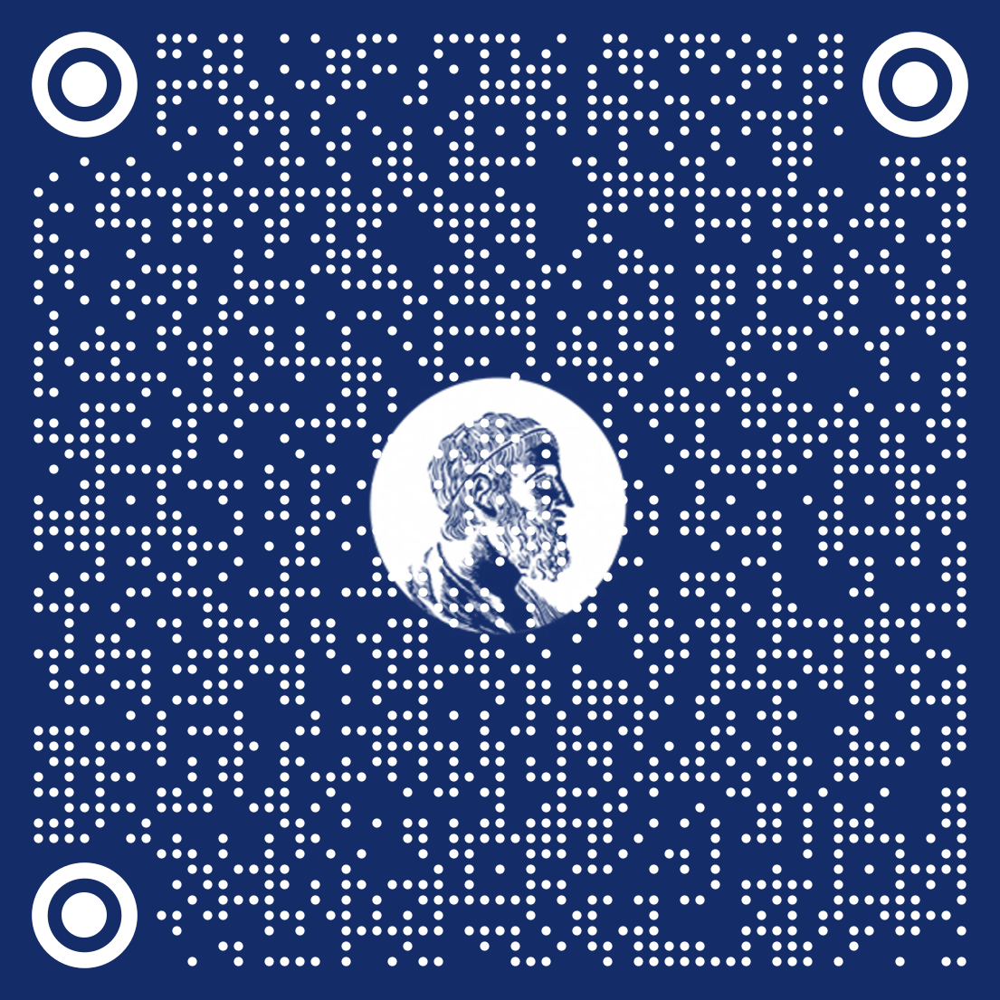

DEFESAS AGENDADAS
| Data | Horário | Local | Candidato(a) | Orientador(a) | Nível | Programa |
|---|---|---|---|---|---|---|
| 11/10/2022 | 18:00 | Online | Miguel Gabriel Ribeiro Miguel | Prof. Dr. Julio Michael Stern | Doutorado | Estatística |
| 20/10/2022 | 17:30 | Auditório Gilioli | Luísa Bürgel Borsato | Prof. Dr. Rodrigo Bissacot Proença | Doutorado | Matemática Aplicada |

www.ime.usp.br/defesas
DEFESA DE DOUTORADO
11/10/2022
18:00
Online
meet.google.com/hsn-kuxh-tri
www.ime.usp.br/defesas
Miguel Gabriel Ribeiro Miguel
Verificação da Eficiência do Método de Amostragem Haphazard na Otimização de Custos em Pesquisas
Comissão julgadora
Prof. Dr. Julio Michael Stern, IME-USP
Prof. Dr. Marcelo de Souza Lauretto
Profa. Dr. Marcio Alves Diniz
Prof. Dr. Victor Fossaluza
Prof. Dr. Hellinton Hatsuo Takada
Programa de Pós-Graduação em Estatística
DEFESAS AGENDADAS
| Data | Horário | Local | Candidato(a) | Orientador(a) | Nível | Programa |
|---|---|---|---|---|---|---|
| 11/10/2022 | 18:00 | Online | Miguel Gabriel Ribeiro Miguel | Prof. Dr. Julio Michael Stern | Doutorado | Estatística |
| 20/10/2022 | 17:30 | Auditório Gilioli | Luísa Bürgel Borsato | Prof. Dr. Rodrigo Bissacot Proença | Doutorado | Matemática Aplicada |
www.ime.usp.br/defesas
DEFESA DE DOUTORADO
20/10/2022
17:30
Auditório Gilioli
www.ime.usp.br/defesas
Luísa Bürgel Borsato
Lei Forte dos Grandes Números para sequências de Bernoulli e Medidas de Gibbs em subshifts com alfabetos finitos e infinitos
Comissão julgadora
Prof. Dr. Rodrigo Bissacot Proença, IME-USP
Prof. Dr. Bruno Hideki Fukushima Kimura, IF-USP
Profa. Dra. Florencia Graciela Leonardi, IME-USP
Prof. Dr. Paulo César Rodrigues Pinto Varandas, UFBA
Prof. Dr. Ricardo dos Santos Freire Junior, IME-USP
Programa de Pós-Graduação em Matemática Aplicada